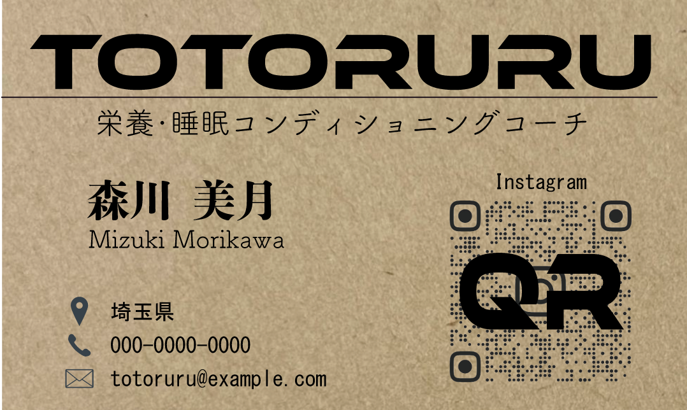
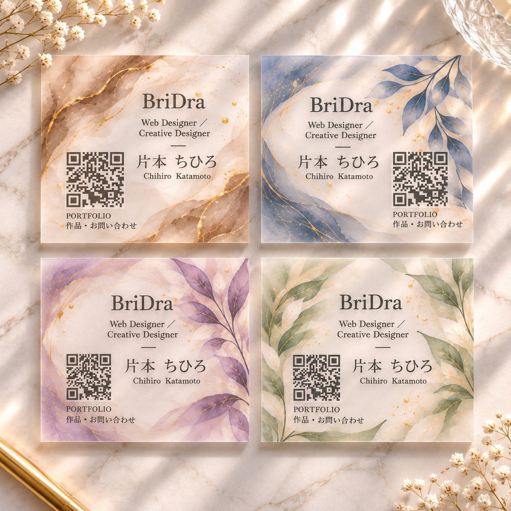
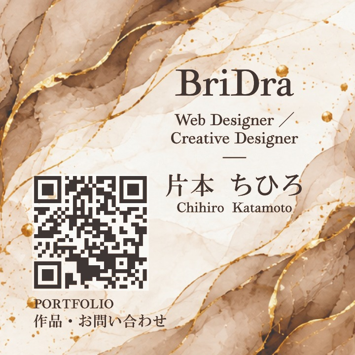
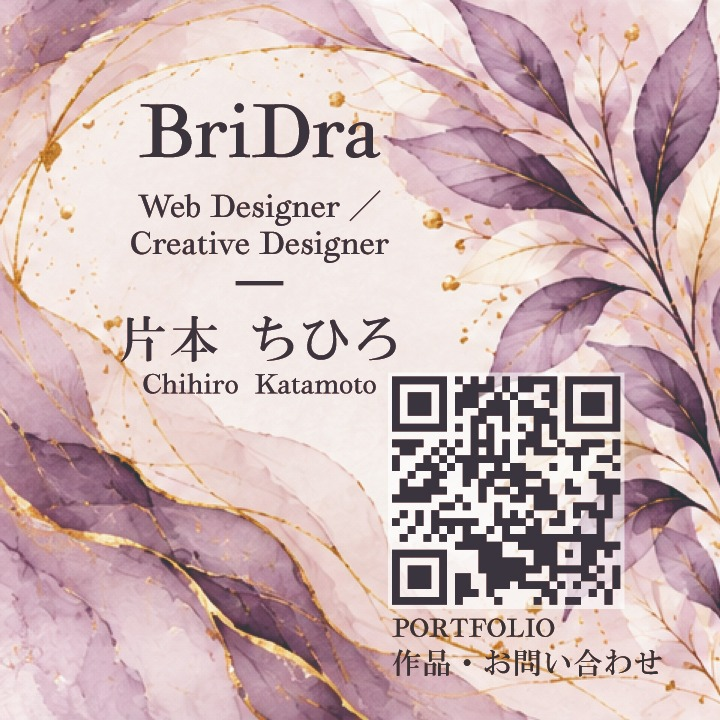
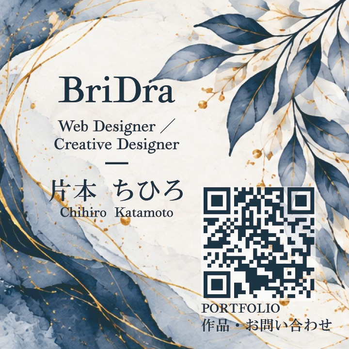
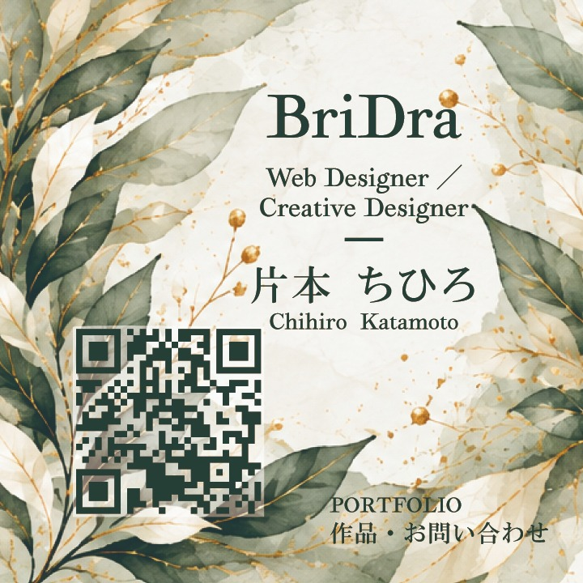

シンプルながら印象に残るロゴ
お客様のご希望である「シンプル」「信頼感」を軸に、ロゴから制作。ブランド名を印象的に見せる文字のデザインと、余白のバランスを意識しました。
Project 01 / Business Card Design
伝えたい想いやブランドの世界観を、小さな一枚に。実案件と自主制作の名刺デザインをまとめました。

Mockup Showcase
制作作品を使用した掲載イメージです。元のデザインは下の「完成デザイン」でご覧いただけます。


01 / Client Work
栄養・睡眠コンディショニングコーチの名刺を制作。お客様のご希望である「シンプル」「信頼感」を大切にしながら、印象に残るロゴと名刺デザインを目指しました。
※実案件の制作物です。ブランド名・氏名・連絡先等はポートフォリオ掲載用に変更しています。
Overview / TOTORURU
Concept / TOTORURU
お客様のご希望である「シンプル」「信頼感」を大切にしながら、受け取った方の記憶に残る名刺を目指しました。
装飾を抑えたすっきりとしたレイアウトの中に、存在感のあるロゴを配置。落ち着いた配色と文字のメリハリによって、親しみやすさと信頼感を両立させたデザインです。
Design Points / TOTORURU
お客様のご希望である「シンプル」「信頼感」を軸に、ロゴから制作。ブランド名を印象的に見せる文字のデザインと、余白のバランスを意識しました。
打ち合わせでは、実際に用紙に触れながら質感を確認。お客様ご自身にクラフト紙をお選びいただきました。温かみのある紙の風合いとブラックの文字を組み合わせ、落ち着きと存在感を両立させています。
ブランド名・肩書き・お名前・連絡先を整理し、必要な情報が自然と目に入るように構成。文字の大きさや配置にメリハリをつけ、読みやすさにも配慮しました。
02 / Personal Work
「上品」「高級感」「個性的」「おしゃれ」をテーマに、自身のWebデザイナーブランド「BriDra」の名刺を制作。配色や装飾を変えた4種類を展開し、すべて実際に発注・印刷しました。




Overview / BriDra
4種類すべて発注・印刷済み
Concept / BriDra
「上品」「高級感」「個性的」「おしゃれ」をテーマに、自身のWebデザイナーブランド「BriDra」の名刺を制作しました。
洗練された印象を大切にしながら、配色や装飾に変化をつけた4種類を展開。ブランドとしての統一感と、それぞれのデザインが持つ個性を意識しました。4種類すべてを実際に発注・印刷し、デザインから印刷までを形にした作品です。
Design Points / BriDra
文字の配置や余白、装飾のバランスを意識し、華やかさがありながらも洗練された印象を目指しました。
大理石調・パープル・ブルー・グリーンの4種類を制作。配色やモチーフに変化をつけ、異なる表情を持つ名刺に仕上げました。
デザインの完成だけでなく、印刷・発注まで行いました。4種類それぞれを実際の名刺として形にしています。